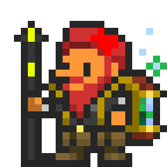

Weather
Weather FAQ |
What does weather do in Orna?Weather changes a dukedom and has players and enemies have a chance to start the battle with a status condition. It also allows some mobs, like Yetis, to spawn depending on the weather. |
How long does weather last?Weather lasts for one whole hour, starting from the top of the hour. For example, it can rain from 3PM to 4PM on some days. |
What's the point of Codexing?As of right now, there's not a serious reason to codex. Most people do it for fun, and there is an achievement line that will give you a small bit of orns for your troubles, but for the most part, there's nothing enticing. |
Elemental Interactions |
In order to log the elemental interactions (weaknesses, resistances, and immunities), you'll need to use those elements on the foe. It's generally best to keep one of each element (Fire, Water, Lightning, Earth, Holy, Dark, Dragon, Arcane, and Physical) in your loadout, but having hybrid skills like the omnimancy skills from Omnimancer and Ultima from Deity can greatly help, but those are more endgame skills, and it's not expected that you have them. These skills could alternatively be on the weaker end, so as to not prematurely kill the monster you're trying to codex. |
Moves |
In order to log their moves, you'll need to see them use them. This section is particularly simple to get done. Just simply stall until the foe has used all their moves. However, there are some particularly difficult skills. Healing skills, such as Great Heal, and ward restoration skills, such as Mend Wall, require the foe's HP or Ward to be low enough to warrant using them. In other cases, buffs or debuffs might not be used if the target of them already has one of the possible statuses caused from the skill. For example, a monster won't use Miasma if you're already Poisoned, even though it also causes Blight. Some moves just have a rare chance to be used, though. Ones like Coup de Grace II, Onslaught, Ravage, or a raid boss' ultimate attacks have a lower chance to be used and might take longer to find. |
Drops |
In order to log a foe's drops, you have to, well, get them all. This is an easy feat in theory, but keep in mind that some things don't drop with 100% certainty. In the case of normal, common monsters, this isn't an issue, just find and kill another one. However, in rarer instances, or in harder to kill instances like raids, this may be a bigger issue. To raise your drop rates for everything except raids, consider using things like Dowsing Rods, and equipping weapons such as the T8 Horror, which boosts Luck. For raids, the more damage, the better. Items with a green background at base quality will drop (nearly) guaranteed at 50% damage. Items with a blue background at base quality will drop (nearly) guaranteed at 100% damage, and items with a purple background at base quality aren't guaranteed ever, but their chances increase with damage. |
Status Immunities |
The most notorious one! In order to get all the status immunities, you must attempt to give the foe each status they're immune to. There are loads of status immunities in the game, but most of the time, this tab is dedicated to status effects only. There are 11 common ones, and each one can be achieved with different things. A go-to build to get all 11 cheaply is Great Mimic's Mischief, Sleep Dart, Stun Dart, and a Gargoyle pet. Alternatively, the offhand "Bag of Tricks" can proc every status condition you need, but each proc happens rarely. Unless you're VERY patient, I suggest the other route. |
Video on CodexingAre you more of an aural learner? Consider this video made by Shabbash! |
|
*Do keep in mind that this video is over a year old, and may contain outdated information. |
Contact Me |
Discord: konq. Orna: Konq |
 |